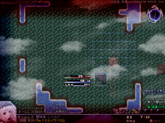
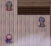
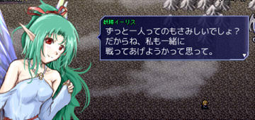

シルバーセカンド開発日誌
■
2013-11-16 (土) 片道勇者+ その22▼
【片道勇者+ その22】
先週は要請があってウディタのドイツ語対応のチェックを
行ったりしつつ、片道勇者+を進めていました。
で、片道勇者+の方ですが、ようやく一旦「新アイテム」編を終え、
「バランス調整」編という名の「これまでのネタ回収」編に入りました。
ここで総合的な修正や、途中で増えた全ジャンルのデータ追加や、
増やしたデータも合わせた数値調整を行います。
今回の新アイテム
100％の確率で防御する代わりにかなり耐久度が低い盾、
「追加装甲」というジャンルが増えました。
特殊なものとして、「氷霧の追加装甲」は理力系攻撃のみ防御し、
炎なら完全無効化できる優れものです。
また、今回はインターフェース修正やシステム修正も行いました。
一つは「アイテムに乗ったときの自動回収」のタイプを
以下の中から選べるようになるオプション処理です。
・全て回収……装備を含めて、持てるなら全て自動回収。
・装備以外全て……装備以外を先に拾ってしまいます。
※従来は「装備」を含むと何も拾わず選択画面に移りましたが、
＋は装備以外を拾ってから選択画面を出すよう改良されました。
・装備・爆発物以外全て……装備と可燃物以外を先に拾います。
・手動選択……どんな場合でも、何も拾わずそのまま選択画面に移ります。
これで少しはプレイスタイルに応じた切り替えができると思います。
あともう一つの新機能として、
「矢を装備すると攻撃が届かないときに投げる」機能を搭載！
片道勇者+では矢の「投げる」コマンドは使えなくなりますが、
装備していれば攻撃時、隣に敵がいないときに投げるようになります。
ただし射程は2マス（弓装備なら3マス）。
「矢」に関しては、技術的にいけそうなら「アクセサリ枠」と
「盾か矢枠」を別にして装備枠を3つから4つに増やしたかったんですが、
いじるのが中枢すぎてバグが非常に増えそうなのと、修正箇所が多いのと、
ウィンドウの幅が変わったりして、頭痛がする案件であることが
検討の結果で分かったので、残念ですが今回はあきらめることにしました。
「矢」を装備しているときの利点が1つ増えたのは、
実はこの装備欄追加をあきらめたことによるものだったりします。
今後のバランス調整編で「追加装備」は、なるべくどれを装備するか迷う、
または使い分けできる感じに調整できるとハッピーですね。
【最近のバグ修正まとめ】
ついでに昨日、オリジナル版の片道勇者がVer1.70になりました。
最近の修正もまとめると、修正内容は以下の通りです。
Ver1.70 ツイッター投稿時、武器防具の「付与」の前後に
大量の空文字が入っていた不具合を修正
Ver1.699 ほとんどの状況で2000km越えの選択肢が
表示されなかったバグを修正
Ver1.698 一度でもクリアしたデータでプレイしたとき、
ゲームオーバー時のBGMがたまに鳴らなくなる不具合修正
Ver1.697
・冒険者の袋マークの数が買い物後に合わなくなるバグ修正
・マップの最上部と最下部で闇のブレスが出るとエラーが出るバグ修正
・ツイッターの死亡時メッセージで敵のとどめスキル名が反映されないバグ修正
Ver1.68～Ver1.692はこちら
→ 【2013/08/31の記事】
以下は拍手返信です。いつもコメントありがとうございます。
＞片道勇者の海外版と日本語版ってネットワーク機能は別々ですか？
＞日本と海外で共有してても良さそうな気がしますが。 .
英語版だと日本語のプレイヤー名やアイテム名や地名が
出せないので、そこが解決できなくてネットワークは別々になりました。
＞（「どこを目指すべきか分からなくなってきました」に対して）
＞どっかの企業からVitaとかプレステに移植の依頼がくる、
＞もしくはアニメ化、漫画化はどうでしょ。（敷居が高いかも）
展開の広がりに対するロマンは、昔は強かったです。
ただ、どうやら知名度がアップしても生活の豊かさには
繋がりにくいみたいなのと、手を広げすぎても
中途半端になるだけかなと思うようになってきたので、
年を取るにつれてそういった欲求は減ってきてしまいました。
＞ローグライク系にありがちな、名前の似てる
＞偽アイテムとかは出す予定ありますか？ .
ないです！ 説明文が自動表示なので、
そこで嘘を付くのもフェアじゃないですしね。
ただし代わりに、＋からミミックが搭載されます！
＞＞ +では装備以外が拾えるようなら全部自動で拾う機能が付きました
＞「自分としてはむしろ全て手動拾得のほうがやりやすいな」
＞「自爆系アイテムを自動で拾うのはやめてほしいです」
とリクエストにお応えしてオプションを付けてみました！ ■
2013-11-10 (日) 片道勇者+ その21▼
【片道勇者+ その21】
引き続き「新アイテム」実装を続けています。
また英語版のリリースに備えて、英語版PVを作っています。
今回の新アイテム

新たな機能を持ったアイテムや、さらなる上位アイテムを追加！
これまで以上にどれを持って行くか悩めるプレイができるかも。
他に「宝箱のカギ」なんてのも実装されました。
＋では宝箱を叩いて壊すとまれに中のアイテムが
破損するようになったのですが、このカギを使って開ければ
安全に開けられる上に、経験値も入ります。
あと、そろそろ英語版片道勇者の情報が何か出てくるかもしれません。
（って前にも言ってから一ヶ月ですが！）
感性の違いやらイメージやらなにやら諸々があるので、
海外でうまくいくかどうかは完全に未知数ですが、
まあ、そっちもがんばってますよー、とだけ。
そろそろアイテム編を終わらせて、途中で増えた大量の
追加要素編やバランス調整編、新エンディング編に入っていきたいです。
だいぶ残りも少なくなってきましたが、まだまだ続きます。
＞ウルフさん自身は今どれくらい自分が出来ていて、
＞どこまで目指そうって言うのはあるんでしょうか？
「海外進出してみたい」くらいが最終目標だったので、
今どこにいるのか、これからどこを目指すべきなのかは
分からなくなってきました。
ただ、今も昔も「ゲームを作り続けることが許される環境を維持する」と
「自分が（＋できれば他の人も）遊んで最高に面白いゲームを作れ」が
私の最大の目標です。あとはたまに変なアイデアが降りてきて
片道勇者を作ったりするような、そんなことが続くだけだと思います。
＞ツイッター表示欄がおかしいですよ
修正してみました！ ツイッター側の仕様変更がたまにあるようなので
今後もときどきおかしくなるかもしれません。
最初は「@」付きのメッセージを出さないようにしてたんですが、
今は色々いじってもできなくなっている気がします。 ■
2013-11-02 (土) 片道勇者+ その20▼
【片道勇者+ その20】
新クラス編のEDテキストが思いつかないので一部を残したまま、
いよいよ昨日から新アイテム編へ突入です。
それと、サイト管理がちょっとだけ楽になるように改修しました。
ウディタ公式サイトの各所に「違反通報」リンクを付けたので、
必要なときにご利用くださいますと助かります。

地面に仕掛けるトラップアイテムも実装！
さてアイテム編ですが、「付与」周りで、面白さをなるべく確保したまま
面倒臭さを減らせるようなホーバーホールを検討中です。
たとえば、オリジナル版でランダム付与が付く「剣の巻物」などは、
以下のように仕様変更される予定です。
◆巻物のランダム付与を撤廃し、特定の付与を付けられる巻物が
そのまま落ちるように修正します。（たとえば 剣の巻物『頑丈』 とか）
→ 「欲しい付与が付くまでリセットしまくる」という不毛な行為で有利に
なってしまっていたので、落とした時点で付与を固定にしました。
◆これまであった一部の最高クラスの付与は、より強力にした上で
ドロップアイテムの初期付与のみで登場するようになります。
（たとえば「伝承のダガー」は巻物では作れないが、拾うことはある）
「いちおう一般アイテムだけどアーティファクト」的な存在を表現！
◆ほぼ全ての「付与」に「消耗速度の増加」がセットになります。
強くした武器ほど消耗が早くなり、「応急修理の巻物」が
これまで以上に必要になるスタイルに調整します。
きれいなままで使いたい人は「高度修理の巻物」や鍛冶屋を探す感じで。
◆「応急」の付与を大金で消せるNPCも冒険後半で出てくるようにします。
基本的には、遠慮なく応急修理できるようにするための措置です。
「もう3個目の【応急】が付いたけどたぶんどうにかなるぜー強いぜー！」
な感じで。あと、お金の使いどころも新たに用意できて一石二鳥。
目標としては、「微妙に完璧になりきらない武器･防具」を
だましだまし使っていくことが、片道勇者の倉庫なしプレイにおける
有効なスタイルにしていきたいところです。
まあ、実際はこれまでも同じといえば同じなんですが、「応急」を付けると
「私、けがされちゃった……」なキズモノ臭がムンムン漂ってきていたので
それを緩和させるのと、さらにリセットの有用性を下げるのとで、
両面から気持ちよく遊べるようにしていきたい狙いですね。
【片道勇者TRPG 予告】
実は最後のセッションからもう半年近くが経つんですが、
集まれるようならばまたプレイヤーの皆さんに集まっていただいて、
最後の「オマケ編」セッションを行う予定です。
私のゲームには恒例の、ゲーム終了後の雑談コーナー的なものです。
次回は、その「オマケ」と「最終話（※13話）」をセットで公開して、
TRPGリプレイの更新を終了、とさせていただくつもりでいます。
PLの皆さんもお忙しいようで、なかなか集まれる機会がないので、
更新そのものはもしかしたら来月になるかもしれません。
【片道勇者TRPGリプレイ 公式ページ】 （12話まで公開中）
また、いつも人気投票コメントをお寄せくださっている皆さま、
本当にありがとうございます！ ここまで読んできてくださって、
PL一同、いつも本当に励みになっています。
以下は拍手コメントです、いつも多くのアドバイスやご意見、
誠にありがとうございます。
＞凄いですね、ウルフさん。まさかゲーム内の日本語を
＞翻訳するだけの英語力を持っていたとは！ .
えっ、私にはまだ翻訳は無理ですよ！！ 目玉が飛び出るほどの
翻訳料金（※でも相場としてはとても良心的）と引き替えなんです。
間接的に借金してる状態なので早く返したいですね。
＞SmokingWOLFさんはコモンイベントの投稿はなさらないのですか?
＞とても興味があるのですが、要求がエスカレートするからダメ?
エスカレートしそうなので面倒臭い！ というのもありますし、
「基本システム」という、すでに全ウディタに入ってる
巨大コモンイベントがあるので、仮にコモンを投稿する気なら
基本システム側に入れちゃうでしょうね。
私の組み方が気になる人はぜひ、基本システムを熟読してみてください。
＞観光客、どうせなら射程２くらいでスナップ写真を .
＞撮れて（もちろん素早く逃げないとヤバイ）魔物全種集めると
＞いいことあるとか開発死にますか死にますねごめんなさい！
実はカメラ＆モンスターコンプリートも検討してたんですが、
世界観に合わないのと、モンスターの種類がそこまでいないのとで、
結果的に数値を積み重ねていく「旅行記」になりました。
多くの敵に囲まれてるなどのヤバい状況下で書くほどたっぷり書けます。
「観光客」はどこまでリスクを取るか問われるクラスになりそうです。 ■
2013-10-26 (土) 片道勇者+ その19▼
【片道勇者+ その19】
今週はガッツリ、新クラス編の作業を進めていました。
クラス編は今週で全部終わるかなと期待していましたが、
おまけイラストや新クラス用の特別エンドがまだでした、惜しい！
新しいクラスは以下の三種類！
【理騎士】
自己強化能力に優れたバランス型タイプ、全能力が平均的に上昇。
フォース「光の剣」を使えば、攻撃が光ってヴンヴン鳴ります。
性能的には思った以上に地味です、サマルトリアの王子様タイプ？
【忍者】
最大LIFEや最大STを消費して一撃だけすさまじい攻撃を行ったり、
壁や障害物を抜けてワープできたり、強力なトラップや
投げ武器を作れたりします。筋力・敏捷・意志がよく上昇。
超強力なクラスですが、命の削りっぷりも半端ありません。
【観光客】
最弱。「旅行記」を完成させるという特殊な使命を帯びています。
そのためには数千kmにおよぶ壮大な旅が必要です。
初期能力もレベルアップによる能力成長も最弱！
お金が多いのと、こっそり元気度の消耗が少ないのが特徴です。
【片道勇者TRPG 12話公開！】
だいぶ間が空いてしまいましたが12話『分かつ心』を公開です！
砂漠の中で遺跡に向かう組と街で補給する組の
2つのグループに分かれてしまった一行。
今回は遺跡に向かったロイスたちの物語です。
【片道勇者TRPG公式ページ】
【IGF 2014にエントリーしました】
海外で行われる「Independent Games Festival 2014」という
コンテストもとい祭典に「片道勇者」の英語版をエントリーしました！
IGF2014 片道勇者（One Way Heroics）掲載ページ
http://www.igf.com/php-bin/entry2014.php?id=2614(ｱｰｶｲﾌﾞ)
4年前に「出すぞー！」と意気込んでいた願いが今さら叶いました。
これもPLAYISMの皆さまと、ここまで応援してくださった皆さまのおかげです。
本当にありがとうございます。ほぼ15周年にしてようやくです。
ただ、何か結果を出せそうかといわれると、奇跡が起きない限りは困難です。
賞っぽいのは「各部門で数人だけのファイナリストに選ばれる」以上のみ！
658作品もある中から選ばれる確率は限りなくゼロに近いでしょう。
身近な人のゲームでも、片道勇者より10倍以上確率が
高そうな作品ばかりなので、世界の、そして日本の壁を感じます。
それでも私は私で、マイペースに作っていくだけですね。
たまたまコンテスト向けなゲームができたら、たまに玉砕する感じで
ちょうどいいんじゃないかなと考えています。
日本勢が誰かファイナリスト行くといいなあ！
これまでの傾向を見る限り、1人でも通れば伝説になるレベルなんですよ。
以下は拍手コメントです、いつも本当にありがとうございます！
＞TRPGリプレイ、楽しみに待たせて貰います。 .
＞質問なのですが、一回のセッションには .
＞どれぐらいの時間をかけておられるのでしょうか。
短いときは3～4時間、長いと6～8時間になるときもあります。
オンラインセッションだと時間がかかりますね。
＞片道勇者で、最近2000kを越えられないという報告がwikiや
＞スレの方で多いのですが、何か心当たりはありますか？ .
まず、「2000kmを越えられる条件」がオンになるデータは、
「一度でもどれかのクラスで2000kmクリアした後に
新たにプレイを開始したデータ」のみです。
なので、「初めて2000kmに行ったデータ」や
「それ以前に遊んだセーブデータ」をロードしても、
2000kmを越えることはできません。
また、古いバージョンだとクリアフラグが消えるバグがあるので、
「2000km行ったフラグ」が消えてる可能性があります。
現在の最新版はVer1.698（DL版なら1.692）です。
これら以外だとバグの可能性があります。
というか、そもそもこの仕様が分かりにくいので、
一度クリアしてたら、どのデータからでも
2000kmオーバーできるようにしていいかもしれませんね。
→ 2013/10/27 ごめんなさい、確認したところこの現象はバグでした！
Ver1.699で修正してみました。これで、初めて2000km越えしたデータを
ロードしても2000km越えできるようになりました。
＞ウディタに同封されているグラフィック合成器で
＞作った素材は、ツクールでも使えるのでしょうか？
パーツによっては制限があるかもしれませんが、
ウディタに同封されてるデータの範囲では
「ツール問わず」なのでツクールでもプログラム作品でも
問題なく使えますよ。スマホ作品でもたまに使われてるそうです。 ■
2013-10-19 (土) 片道勇者+ その18▼
【片道勇者+ その18】
今週は、体調が悪い日はTRPGリプレイ編集をしつつ
元気な日はマップパーツ編の作業を進めていました。
今日明日中にはマップパーツ編を終わらせてクラス編へ行きたい！
酒場。クラスによってはボーナスをくれる人が
ランダムで出現したり、仲間の出現率が高かったり、
ちょっとだけ元気回復できたりします。
（※魔王は付属しません）
あとは鍛冶屋や練金おばばの家、贖罪の家など、
これまでのにあってもおかしくなさそうな小屋を追加したりしました。
罪人専用の街や、強い敵が出てくるエリア特有の街なども
色々実装していきたいと考え中です。
難しいエリアほどチャンスがある、という造りを目指したいですが、
この調子だと永遠に時間がかかりそうなので効率よく進めたいですね。
それともう一点、関所を越えて別の国に移る処理をようやく実装しました。
国は「最初の民の国」「異民族の国」「獣人の国」の3種類！
国によって地形の傾向が変わったり、出てくる街の住人が変化します。
国によって敵も変わると面白そうですが、
バランス調整を3通りもやってられないのと、
グラフィックをそんなにたくさん作れないと思うので、
ひとまずは「国によって少しだけ何か偏りを持たせる」か、
または「基本的にそのまま」になると思います。
【片道勇者TRPG 続報】
一番上にも書きましたが、今週はリプレイ編集作業を進めていました。
来週あたり、第12話を公開できると思います。
過酷な砂漠で二手に分かれてしまったロイスたちの運命やいかに！
なお、来週公開の12話を含めて、残りストックは2話分です。
ひとまずこの2話分を公開し終わったら、このシリーズは
休憩もとい最終回とさせていただく予定です。
現状のペースを見れば分かりますが、
ストーリーのペース配分的には大失敗でした。
このキャンペーンは、ゲーム公開よりも短いスパンでリリースできるお話が
どこまで続くか試してみたかった、というのも目的の一つにあったのですが、
それでもなかなか10話以上（3～4ヶ月くらい？）続けるのは難しいようです。
ただ、この分野でどのくらい自分がもつか分かったのは、大きい収穫です。
もしまたGMする機会があるなら、この耐久度をもとにペース配分したいですね。
以下は拍手コメントです、様々なアドバイスも
いつも本当にありがとうございます。
＞ダンジョンとか、マップの上端から下端まで
＞広がってるようなのが見たいです（略）。 .
というリクエストにお応えしているか分かりませんが、
＋ではダンジョンそのものがまるっと地形として出てくる
「要塞」地形というのがあります！
浸食地帯以上に突破するのが困難なので
遠距離の旅をする方はぜひご期待ください。
感触としては不思議のダンジョンの後半階みたいでした。■
2013-10-12 (土) 片道勇者+ その17▼
【片道勇者+ その17】
今週も片道勇者英語版に2日、マップパーツ編に費やしたのが5日です。
おかげさまで風邪も治って、トイレから離れられない呪いが解消しました！
そしてイベント編は片が付いたので今はマップパーツ編です。
まず＋化にあたって、マップパーツエディタを強化しました。
・チップの配置に確率を設定できるようになった
→ 同じ施設でもほんのちょっとだけ見た目が変わります
ダンジョン内の水辺がちょっとだけランダムとかそんな感じ。
・サイズ無制限で作れるようになった
→ これまでは1画面内までのパーツしか作れませんでしたが、
これからは大河や巨大な森、巨大な湖・関所などが作れます
これでちょっとダイナミックなマップが作れるので、
アイデアの幅が広がります。やはり機能拡張こそアイデアの源泉！

姿の見えない敵が潜む森林
他にも関所や、溶岩の大河で決闘イベントなど色々考え中です。
以下は拍手コメントです、いつもありがとうございます。
＞片道勇者+は500円ですかー 買う気満々ですでに
＞先月2000円のウェブマネー用意しておきましたが・・・
あまりの不景気っぷりに、信用を犠牲にして突然1000円くらいのお値段になる
可能性もそこそこありますのであまり安心しすぎないでくださいよ！
しかし問題は、相談の結果、800円など中途半端な値段になったときですね。
ウェブマネーだと微妙に買いにくいという。
というかプラスは来年リリースが濃厚なのでまだウェブマネー買わないでー！
＞カンパの窓口を設置してみてはどうでしょう？ .
＞ページ内にamazon等のアフィリエイトを設置してみては？
ご厚意に甘えて、トップページの一番下あたり付けてみました。
ただ、実はウディタ公式にも私の本のアフィリエイトが貼ってあるんですが、
1日20～40円分くらいなので、サイトの印象を
てんびんにかけるとちょっと悩みどころだったりします。
広告貼ってあるとあまり印象がよろしくないかなとも思う一方、
それでもしっかりサーバ費用の足しになっているので、
ご利用くださっている方には本当に感謝しています。
＞（シルエットノートよりお色気担当脇役NPCのリーザ）
＞アカン・・・もう全く記憶に無かった・・・。 .
思い出して下さいよ、双眼鏡シャワーシーンですよ！
たぶんシャワーシーン自体は覚えているけれど
それが誰だったか覚えてないケースではないでしょうか。
名前や存在感が地味だと、覚えにくいですよね。■
2013-10-06 (日) 片道勇者+ その16▼
ちょっとだけハロウィン風に。
シルエットノートよりお色気担当脇役NPCのリーザ。
まあ特徴と言っても金髪長髪なだけで知名度は誰それ状態なんですが、
私のゲームだと金髪ストレートロングのキャラって
そんなにいない気がします。
【片道勇者+ その16】
今週の内訳は片道勇者英語版の対応に2日、風邪で倒れてたのが1日、
イベント編をひとまず完了させるのにかかったのが4日です。
特に下痢がひどくて頻繁に「うっ！」となるのがちょっと楽しいですね。
油断すると重力に引かれたお腹のブツが
一気にいきそうになります、お、おお……。
さて、それはそうとイベント編がようやく一段落したんですが、
その中でも今週思ったより苦戦したのが「女神像」の改造！
女神像、これまでは「筋力アップ」や「魅力アップ」などのメニューが
常に全部出てて好きなときに好きなだけ選べましたが、
それがクラスの差を完全に埋めかねないほどに強力だったので
ショップと同じように、選択できるメニューをランダム、かつ限定的にしました。
武器や防具の取得、最大元気度のアップ、ペットの復活など
新しい項目を加えて、ランダムにいくつかが出るようになりました。
（3つにするか4つにするかは調整中です）
選ぶたびに5→10→20と必要レベルが上がりますが、
別の女神像にたどり着けばまた必要レベルがリセットされます。
これくらいならたぶんマニアモードで使用可能にしても大丈夫でしょう。
ちなみに魅力は女神像では上がらないようにする予定です。
1レベルでも強力すぎるので、完全にクラスの自動成長と特徴で
制御する方向に調整する予定です。
以下は拍手コメントです。
片道勇者+へのご意見などいつも本当にありがとうございます。
＞（片道勇者のダウンロード数が14万だと報告したことに対して） .
＞ダウンロードされる度に10円貰ってたら・・・とか考えちゃいませんか
実は考えてます、というのも、ソフト販売でお商売を始めるつもりなら
この見方がすごくいいセン行ってるんですよ。
有料版アプリが売れる数はフリー版の1～2％というデータがあるらしいので、
例えば片道+を500円で売ると考えたらフリー版1DLあたり5円～10円で換算すれば
最終的にどのくらいのお金になるかの見込みが立てられるんです。
つまりダウンロード数からの見込みは……。
＋までを合計1年半以上かけて作っても結局その程度だろうってことですから、
その見込みだと生活には全然足らないのが現実です。
この辺の壁をどうにかすることがゲーム開発者の悩みの種ですね。
なお片道+の価格は未定ですが、海外展開するなら
いくら高くても600-800円、素直に行くなら500円ジャストくらいかな、
と私個人の直感では考えています。もちろん翻訳・販売してくださる会社さんの
都合や戦略にもよりますので、予定は未定。
ただ、ローカライズ費用は最初見たとき目玉が飛び出たりしたので、
最終的に誰か赤字になるかもしれなくて私の顔は青いです（※まだ払ってない）。
＞エイプリルフールネタで「女神勢（モノリス除く）がモノリスに .
＞イタズラを敢行する」というのがありましたが、仮に実行していたら
＞時間を巻き戻されて終わる気が……。 .
＞モノリスにしようとしたイタズラが妙に気になって仕方ありません。
その辺はぬかりなくちゃんとネタに組み込んでありますのでご安心を！
能力者バトルばりの作戦が展開されますよ！
16P用のネタ自体はあるので、機会があれば書くかもしれません。■
2013-09-28 (土) 片道勇者ボツネタ▼
【今週の状況】
今週は学生さんの作品を見させていただいたり
オリジナル英語版のバグ修正したり旅行に行ってたり
アーマードコアVDが発売されたり
ちょっとだけハウスキープに奔走してたりしてたので、
大きな進行はありませんでした。
片道勇者+でボツになったクラス「魔王」のED用ラクガキ。
「魔王」みたいに通常と立場が違うキャラで遊ぶとすごく面白そうなのですが、
かなり多くのNPCのデータを新規に作らねばパッとしない感じだったので、
面白そうではありましたが今回はちょっと見送りました。
次はプレイヤーの立場が違う場合でも、NPCの反応を
うまく変えやすい造りにしたいですね。
片道勇者のオリジナルVer英語版のほうは最終調整＆デバッグ作業に入っています。
プラスVerは何度も言いますが日本語版でさえまだなので鋭意開発中です。
プラス版はイベント周りでどんどん新しいネタが浮かんで永久ループに
入ってるので、一旦イベント編を終わらせて先に行かないとちっと進みません。
なのでイベント編が一区切りするところまでいったら、
残りの、「マップパーツ（建物）」、「アイテム追加」、「バランス調整」、
「プレミアム感を感じられそうなオマケ要素色々」の実装を終えた後、
また戻ってイベント追加を行っていきたいと思います。
ちょっと余談ですが、イベント作りをしていると、
機能追加 → この機能を流用して何か作れないかな？ → アイデア発生
→ 追加で機能追加 → この機能を流用して（略）
の好循環が発生することが分かりました。
どうやら自分の場合、イベントのアイデアはゼロから生み出すよりも
機能・世界観の制約から枝のように伸ばしていくほうが作りやすいようです。
イベント編の作業に入るまでは「何も思いつかないよー！」と思ってましたが、
いざイベント編に入ると意外にもどんどん思いつくのです。
年を取ると「見合わないほどの大きな手間を投入する必要があるアイデア」を
採用することが心理的に難しくなってくる感じがしますが、こういった形でも、
新しいアイデアを思いつくための条件を見いだせると嬉しいものです。
以下は拍手返信です。
プラス版へのご意見・アイデアもいつもありがとうございます！
＞褐色…おっぱい…セーブ屋…そうか！分かったぞ！ .
＞セーブと称しておっぱいで誘惑して自分もろとも勇者を .
＞闇に引きずり込む魔王（or『闇』）信奉者（一方的）だな！
＞えぐい！えぐいぞ！！もっとやれ！！！ .
このコメントをいただいて思い出したことがあります！
実はネタ帳には、闇に飲まれる直前までいかがわしいお姉さんと
イチャイチャできてフィニッシュ（笑）を見ようとすると
闇に飲まれるイベントが案としてあったのですが、
作るのが面倒くさすぎてボツになったんです。
この案に限らず、片道勇者には
ちょっとくらい退廃的なイメージも入れたかったんですが、
結局、住人がのんびり闇にのまれていくゲームになってしまいましたね。
まともに世界の破滅を理解してる一般人は耳長の里で
回復してくれる女の子くらいかも。■
2013-09-20 (金) 片道勇者+ その15▼
【片道勇者＋ 開発 15】 国システム

旅を進めていくとどうしても変化が少なくなるので、
どうやってちょっと変化を持たせようか考えた結果、
ちょっとした偏りを付けるために
「国」という要素を設けることにしてみました（実装途中！）

褐色な異民族の人たち
国が変わるとどうなるんだー！？というと、
出てくる街の住人や出現地形の傾向が変化します。
そのほか、国が違うことによるギミックも
何か入れられたらいいなあと考え中です（交易チックな要素とか）。
ちょっとした気分転換要素なのでめっちゃ面白くなるってわけじゃないですが、
お金が必須すぎるとか、食い物山盛りだけど武器防具の補給が難しいとか、
そういう観点で国の変化を付ける予定です。
他の用事も複数入っているので来週は進行がゆっくりになりそうですが、
以後も色々ネタを考えながら進めていきます。
以下は拍手返信です。
今回も片道+へのたくさんのご意見をいただき、誠にありがとうございます！
＞まさかのイーリス参戦！ しかし、イーリス変身とかしないで小さいまま…？
＞ウルフさんとこはスケイルやアウルみたいに変身して一緒に戦う展開がある
＞一方で、リス君のホールドがどうしてもちらついて…術を一発撃ったら .
＞真っ白になったり、しませんよね？ .
真っ白になったりはありませんが参戦はミニサイズのままです！
ペット並みの耐久力ですが敵を弱らせる遠距離状態異常持ち！の予定です。 ■
2013-09-15 (日) 片道勇者+ その14▼
【片道勇者＋ 開発 14】

片道勇者+ではイーリスも戦闘に出られる……予定！
今週は新しい仲間キャラを実装したり、
（仲間みたいに同じマスではなく）後ろをついてくるNPCを実装したり、
全体的にキャラクターの追加を行っていました。
毎度のことなんですが、NPCはいつ出現するか分からないので、
メッセージが気軽に作りづらいのが難です。並べても変にならないかとか、
本筋とあまり関係のないところで脳のメモリを使うのがほんの少し大変です。
結局、最後はそういうところもポーイと放り投げるんですけれど！
衛兵しかいない街とか、一体何を守ってるんだ衛兵！
で、今回から新たに実装されたのは、後ろを付いてくるNPCです。

たとえばその一例、「乳牛」！！
1日1回、牛乳をもらえて元気度が回復する他、
ピンチなときは囮にしたり肉にしたりすることができます。
ただし山や海は越えられません。
これと同様の処理を利用して、
「仲間にはならないけどついてくるNPC傭兵」
を作ったり、「荷物を拾ってくれる荷運び動物」を
作ったりもできそうで、ちょっとワクワクしています。
以下は拍手返信です。皆さまいつもありがとうございます！
＞質問なのですが、片道勇者のデータを＋に
＞引き継いだりとかできるのでしょうか？ .
＞やり込み中なので気になりました。 .
データ構成が違うので引き継ぎは難しいのですが、
クリアしたフラグ・手に入れた特徴・エピローグの
コンバートくらいならば何とか可能だと思います。
次元倉庫はアイテムフォーマットが変わってくるので、
空っぽに戻ることになると思います。
＞まじっすか！イーリスさんが戦うなんて全く .
＞役に立たなそう！でもぜひ連れて歩きたいです！
いちおう隠し仲間なので、主人公を食わない程度に
ほどほどに便利ですよ！
＞すもきんさんはゲーム製作においてモチベーション維持って
＞どうなさっているんでしょうか。私も小説執筆をしており、一応
＞プロを目指していますが、物凄く集中できた期間はあったのに、
＞ここ2、3年は無気力状態が続いています。10年以上もゲーム
＞製作に没頭できるすもきんさんが本当に羨ましく感じます。 .
＞ある意味、異常ささえ感じてしまうくらいです（失礼ですみません）。
＞モチベーションの維持、または回復のため、 .
＞心がけていることなどはありますでしょうか？ .
私のモチベーション維持に関しては、
「奇跡的にも作ったゲームを面白いと言ってくれる友達がいたこと」と、
「挑戦する場へのあこがれがあったこと」と、
「共に切磋琢磨する仲間がいたこと」の3点がとても大きかったです。
（長いので以下追記） ▼追記を開く▼
しかしそれがなかった頃、つまり私がゲーム開発に触れた当初、
最初の3年くらいはおもしろくやっていたけれど、
そこから2年くらいは行き詰まったような感じになって
特に方向性もなくダラダラやってるような時期がありました。
当時は作りたいものがあるわけでもなく、
ただ「作る」という行為が面白かっただけでした。
しかし結局それにも飽きて、一時期空っぽになっちゃったのです。
それで何一つ完成しないまま結局計5年間が経ったわけで、
自分には素質どころか根気さえないなと思っていました。
そこから色々あって、たまたま1日で作ったレジェレス1話を
友人に遊ばせてみたところ、えらくおもしろがってくれたのが
きっかけになって、そこから全てが始まりました。
心に火が付いたのだと思います。
「今は技術がないけど、徐々に鍛えて色んなゲームを
作れるようになりたい」と強く願うことになって、
そしてシルフェイド見聞録に至ります（未完だけど！！！）
それ以後は、ネット上の同じ目標の他人と出会って切磋琢磨しあったり、
また、コンテストパークを目指してがんばれたことが
モチベーション持続には非常に大きかったように思います。
コンテストパーク投稿が目標になって、
次はゲーム開発を生活の糧にすることが目標になって……
となって、最後には、毎日やらないと気持ち悪くなってきて、
いつの間にか常にゲームを作り続けている感じになりました。
もちろん、創作とはそれまでにないものを作る作業ですから、
日々やっていても、苦しい日はしょっちゅうあります。
なお私の場合は、ライフハック（日常の工夫）的な
モチベーションアップ方法はいつか慣れちゃって、
なかなか効果が長続きしないんですよ。
結局のところ、自分のモチベーションの維持に一番効いたのは、
「具体的な結果が出る場に挑戦すること」と、
「がんばってる人を一方的にでもライバル視して切磋琢磨すること」
だったと思います。
最近はTwitterなどもありますから、後者はだいぶ楽になった印象です。
まとめると私は、友人が楽しんでくれたことで火が付いて、
勝手な他人へのライバル視と、賞（評価）への欲求などで、
ギリギリ何とかモチベーションをつないできました、という感じです。
これらがなかったら、自分はここまで続けられなかったでしょう。
えらく長いこと続けてる人も、危うい綱渡りみたいなモチベーション維持で
ここまで来てる人は多いんじゃないかなと思います。
ただ一方で、それが分かってるからこそ、
「苦しいしやる気も出ないけど、この状況はきっとみんなそうだから、
ここでちょっと多めにがんばれば他の人を超えられるはずだ！」
と考えてきたことで、これまで続けられてきた感じもあります。
つらさを燃料にする「負けず嫌い内燃機関」とでも言うような発想ですが、
自分の性格には合ってて、ずいぶん助けられました。
モチベーションを維持する方法も、結局はオーダーメイドが
最強でしょうから、皆さんにも自分の性格に合った
モチベーション維持方法が見つかることをお祈りしています。
ただ、もしかしたら他にもっと打ち込めることが見つかるかもしれませんから、
その辺りは臨機応変に！ ときには回り道もいいと思いますし、
色んなことをつまみ食いしていける才能ならばそれもまた役に立つはずです。
皆さんにとって一生懸命になれることが見つかりますように！
Copyright © SmokingWOLF / Silver Second
 カテゴリ: 片道勇者
カテゴリ: 片道勇者 カテゴリ: 片道勇者
カテゴリ: 片道勇者